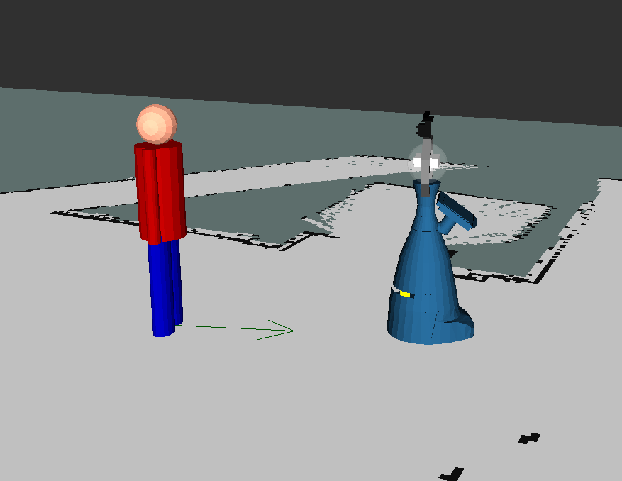
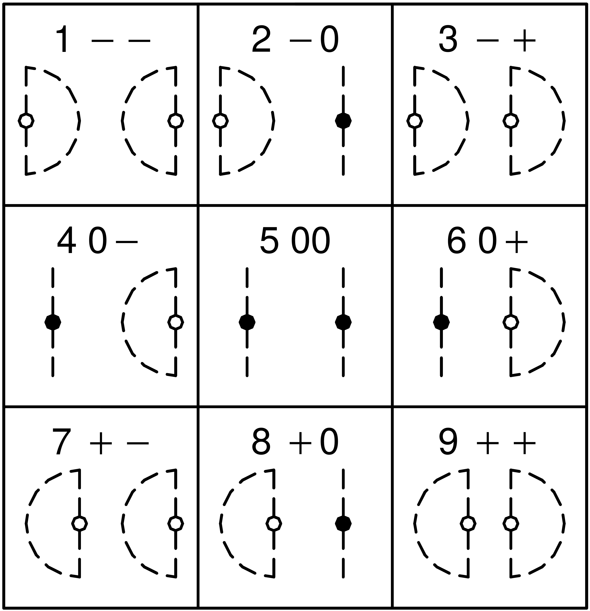
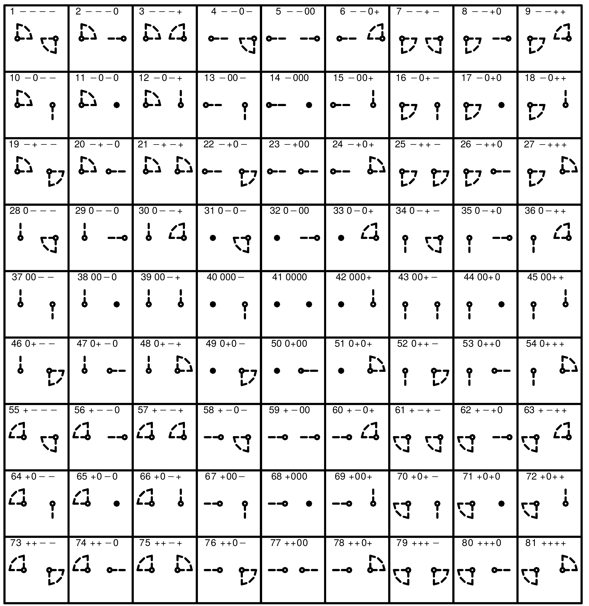

Tutorial on Qualitative Spatial relations and human tracking
Human tracking
The STRANDS project uses a Kalman Filter based human tracker that provides you with the x,y,theta position of the humans and their velocity vector. The tracker can be found here: https://github.com/strands-project/strands_perception_people/tree/indigo-devel/bayes_people_tracker and the whole framework can be installed via apt-get install ros-indigo-strands-perception-people or found on github at: https://github.com/strands-project/strands_perception_people
A short video explaining how it works, can be found here.
Using the emulator in simulation
These are generic instructions, please see descriptions at the bottom of the page on how to use the provided tmux script.
Starting the people tracker emulator in simulation requires the simulator to be running a human environment:
roslaunch strands_morse uol_bl_morse.launch env:=uol_bl_human
for the full simulation or
roslaunch strands_morse uol_bl_morse.launch env:=uol_bl_human_fast
for the fast wireframe mode. In the fast mode, the human can be seen everywhere in the environment, whereas in the normal mode the robot can only see the human when its camera can see it. The human can be moved via the W,A,S,D keys (press F5 to toggle between moving the camera and human) or automatically via publishing command velocities as a geometry_msgs/Twist message to /human/motion. Have a look at [[Working with the STRANDS robots]] for more hotkeys.
In addition to the simulator, run the navigation
roslaunch lamor_bringup uol_bl_nav2d.launch
When both of are running, you can launch the emulator:
rosrun people_tracker_emulator posestamped_to_ppl_tracker_msgs.py
Please see below for a description of the provided output and the visualisations.
Using the people tracker on the robot
Starting the people tracker on the robot is as easy as running:
roslaunch perception_people_launch people_tracker_robot.launch machine:=$HEAD_PC user:=lamor
This is already provided on tab 6 of your robot tmux.
In the following the most important parameters:
machinedefault = localhost: Determines on which machine this node should run. Ideally this machine should be connected to the Asus Xtion it uses. Usemachine:=$HEAD_PCuserdefault = "": The user used for the ssh connection if machine is not localhost. Useuser:=lamortf_target_framedefault = /map: The coordinate system into which the localisations should be transformedlogdefault = false: Log people and robot locations together with tracking and detection results to message_store database into people_perception collection. Disabled by default because if it is enabled the perception is running continuously.
Provided output
The tracker publishes the following:
pose: A geometry_msgs/PoseStamped for the closets person. Orientations are based on velocity and therefore undefined for stationary people.
pose_array: A geometry_msgs/PoseArray for all detections. Orientations are based on velocity and therefore undefined for stationary people.
people: A people_msgs/People for all detections. Can be used for layered costmaps.
marker_array: A visualization_msgs/MarkerArray showing little stick figures for every detection. Figures are orient according to the direction of velocity.
* positions: A bayes_people_tracker/PeopleTracker message. See below.
std_msgs/Header header
string[] uuids # Unique uuid5 (NAMESPACE_DNS) person id as string. Id is based on system time on start-up and tracker id. Array index matches ids array index
geometry_msgs/Pose[] poses # The real world poses of the detected people in the given target frame. Default: /map. Array index matches ids/uuids array index
float64[] distances # The distances of the detected persons to the robot (polar coordinates). Array index matches ids array index.
float64[] angles # Angles of the detected persons to the coordinate frames z axis (polar coordinates). Array index matches ids array index.
float64 min_distance # The minimal distance in the distances array.
float64 min_distance_angle # The angle according to the minimal distance.
The poses will be published in a given target_frame (see below) but the distances and angles will always be relative to the robot in the /base_link tf frame.
Visualising the output

The tracker provides a pose array /people_tracker/pose_array which gives you the position and orientation of the human (green arrow) and a a marker array /people_tracker/marker_array visualising the human position with a stick figure. They can easily be added in rviz to achieve above visualisation.
Configuring the tracker
The people tracker uses sensor fusion to achieve the best possible results. Adding your own detectors just requires to alter this config file:
bayes_people_tracker:
filter_type: "UKF" # The Kalman filter type: EKF = Extended Kalman Filter, UKF = Unscented Kalman Filter
cv_noise_params: # The noise for the constant velocity prediction model
x: 1.4
y: 1.4
detectors: # Add detectors under this namespace
upper_body_detector: # Name of detector (used internally to identify them). Has to be unique.
topic: "/upper_body_detector/bounding_box_centres" # The topic on which the geometry_msgs/PoseArray is published
cartesian_noise_params: # The noise for the Cartesian observation model
x: 0.5
y: 0.5
matching_algorithm: "NNJPDA" # The algorithm to match different detections. NN = Nearest Neighbour, NNJPDA = NN Joint Probability Data Association
leg_detector: # Name of detector (used internally to identify them). Has to be unique.
topic: "/to_pose_array/leg_detector" # The topic on which the geometry_msgs/PoseArray is published
cartesian_noise_params: # The noise for the Cartesian observation model
x: 0.2
y: 0.2
matching_algorithm: "NNJPDA" # The algorithm to match different detections. NN = Nearest Neighbour, NNJPDA = NN Joint Probability Data Association
New detectors are added under the parameter namespace bayes_people_tracker/detectors.
Tracker Parameters
The tracker offers two configuration parameters:
filter_type: This specifies which variant of the Kalman filter to use. Currently, it implements an Extended and an Unscented Kalman filter which can be chosen via EKF and UKF, respectively.
cv_noise_params: parameter is used for the constant velocity prediction model.
* specifies the standard deviation of the x and y velocity.
Detector Parameters
- For every detector you have to create a new namespace where the name is used as an internal identifier for this detector. Therefore it has to be unique. In this case it is
upper_body_detector - The
topicparameter specifies the topic under which the detections are published. The type has to begeometry_msgs/PoseArray. Seeto_pose_arrayin detector_msg_to_pose_array/README.md if your detector does not publish aPoseArray. - The
cartesian_noise_paramsparameter is used for the Cartesian observation model. - specifies the standard deviation of x and y.
matching_algorithmspecifies the algorithm used to match detections from different sensors/detectors. Currently there are two different algorithms which are based on the Mahalanobis distance of the detections (default being NNJPDA if parameter is misspelled):- NN: Nearest Neighbour
- NNJPDA: Nearest Neighbour Joint Probability Data Association
All of these are just normal ROS parameters and can either be specified by the parameter server or using the yaml file in the provided launch file.
Using a detector that does not publish a PoseArray
Like the currently used leg_detector not all detectors will publish a PoseArray. Using the detector_msg_to_posearray node can circumvent this:
This small node that takes in an arbitrary message from a topic and extracts a pose according to a given identifier. The found poses are published as a geometry_msgs/PoseArray. The node is used to transform the output of any people detector to a pose array for the people_tracker. The node is configured using the detectors.yaml in the config directory:
to_pose_array:
detectors: # Add detectors under this namespace
leg_detector: # Name of detector (used internally to identify them. Has to be unique.
topic: "/people_tracker_measurements" # The topic on which the geometry_msgs/PoseArray is published
point_name: "pos" # The name of the point containing the coordinates in question
The parameter namespace to_pose_array/detectors can contain as many sub namespaces as needed. The above example shows the namespace to_pose_array/detectors/leg_detector which contains the information to parse the messages generated by the ros indigo package leg_detector.
topic: this string is the topic name under which the messages containing the positions are published.point_name: this string specifies the identifier for the detected positions. In this case theleg_detectorpublishes a message which contains data like:
pos.x
pos.y
pos.z
The message is parsed for all occurrences of the pos identifier and the result is published as a PoseArray.
Make the robot look at you
There is an easy way to see if the tracker is working, just make the robot look at you when its camera picks you up. Start the strands gazing node:
rosrun strands_gazing gaze_at_pose
This creates an action server that needs a runtime in seconds (0 for inf) and a topic name on which a single pose is published:
rosrun actionlib axclient.py /gaze_at_pose
As a topic use: /upper_body_detector/closest_bounding_box_centre and set the time to 0. Once started, the robot should look at the closest person in front of its camera and also blink occasionally.
QTC and online qtc creation
QTC comes in many different variants. Here we will focus on two of them:
QTC Basic (QTC_B) simplified

QTC Double Cross (QTC_C) Simplified

See slides for recap of tutorial and brief overview of how it works.
Online QSR creator
In this tutorial we aim at creating a ROS node that creates QTC state chains using the qsr_lib. The two agents we'll be using will be the robot and the simulated human.
To start your simulation with the human:
- Make sure there is no tmux session running:
tmux lsshould not show any results. - Update the lamor repository:
git pulland your installation:sudo apt-get update,sudo apt-get upgrade - Run the human simulation file:
rosrun lamor_bringup sim_human_start.sh - Tab 0 start roscore and htop automatically
- Switch to tab 1
Ctrl + b, 1and start the datacentre - Switch to tab 2
Ctrl + b, 2and start the simaulation. The default environment is the fast one. If you want the full experience run it withenv:=uol_bl_humaninstead. - Switch to tab 3
Ctrl + b, 3and start the 2d navigation. Don't forget to specify your mapmap:=<my_map> - Switch to tab 4
Ctrl + b, 4and start the topological navigation. Don't forget to specify your topological mapdataset:=<my_topo_map> - Switch to tab 5
Ctrl + b, 5and start the people tracker emulator. You might have to install this component manually:sudo apt-get install ros-indigo-people-tracker-emulator. I opened an issue to fix this already. - Switch to tab 6
Ctrl + b, 6and start the qsr_lib ros server.
To visualise the results, start rviz and in addition to the map and robot model, add a MarkerArray: /people_tracker/marker_array and a PoseArray: /people_tracker/pose_array
Now, we'll start with our node. The complete example can be found here
Python editor suggestions: Spyder, fisa-dev plugin package for vim, sublime
The most important parts explained:
- Create a new package:
catkin_create_pkg online_qsr_creator rospy geometry_msgs bayes_people_tracker qsr_lib
- Getting all the correct imports:
python
import rospy
from geometry_msgs.msg import Pose
from bayes_people_tracker.msg import PeopleTracker
from qsrlib_io.world_trace import Object_State, World_Trace
from qsrlib_ros.qsrlib_ros_client import QSRlib_ROS_Client
from qsrlib.qsrlib import QSRlib_Request_Message
try:
import cPickle as pickle
except:
import pickle
- Setting the correct parameters for QTC:
python
__parameters = {"qtcs": { # Namespace
"validate": True, # Create valid state chains
"no_collapse": False, # Collapse similar states
"quantisation_factor": 0.01
}, "for_all_qsrs": { # Global namespace
"qsrs_for": [("human","robot")] # Compute QSR for pair human robot only
}}
- Getting the robot pose:
```python
Robot pose is set in a separate callback because it is not stamped and cannot be synchronised
def robot_cb(self, msg): self.robot_pose = msg ```
- The human callback:
```python def ppl_cb(self, msg): self.buffer["human"].append(msg.poses[0]) self.buffer["robot"].append(self.robot_pose)
# QTC needs at least two instances in time to work
ob = []
if len(self.__buffer["human"]) > 1:
# Creating the world trace for both agents over all timestamps
world = World_Trace()
for idx, (human, robot) in enumerate(zip(self.__buffer["human"], self.__buffer["robot"])):
ob.append(Object_State(
name="human",
timestamp=idx,
x=human.position.x,
y=human.position.y
))
ob.append(Object_State(
name="robot",
timestamp=idx,
x=robot.position.x,
y=robot.position.y
))
world.add_object_state_series(ob)
# Creating the qsr_lib request message
qrmsg = QSRlib_Request_Message(
which_qsr="qtcbs",
input_data=world,
dynamic_args=self.__parameters
)
cln = QSRlib_ROS_Client()
req = cln.make_ros_request_message(qrmsg)
res = cln.request_qsrs(req)
out = pickle.loads(res.data)
# Printing the result, publishing might be more useful though ;)
qsr_array = []
for t in out.qsrs.get_sorted_timestamps():
for k, v in out.qsrs.trace[t].qsrs.items():
qsr_array.append(v.qsr.values()[0])
print qsr_array
rospy.sleep(0.3) # Worst smoothing ever, I'm sure you can do better
```
Have a look at the usage example for a more detailed explanation. If you are looking into developing your own QSR, please refer to the guide for developers.
Tasks
- Try to run the
sim_human_start.shtmux file and run the people tracker emulator, visualising the output in rviz. - Try to get the people tracker to work on the robot and make it look at you.
- Start the
qsr_liband run the example client to request a few QSRs. - Have a look at the first of the references below and see if you find a QSR you might want to add to the library. If so, we are more than happy for you to give it a go and contribute.
- Have a go at programming your own online qsr creator, creating QSRs between people instead of between the robot and a person, as done in the example. Maybe you can find a useful application for this in your final task? For example, two persons being close together and stationary might be a group.